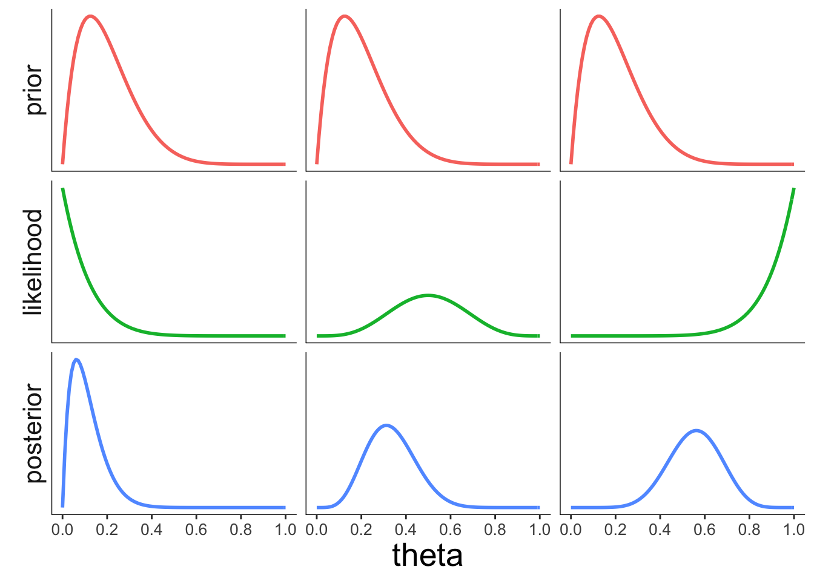

Chapter 6 Probability and causality
6.1 Install and load packages, load data, set theme
Let’s first install the new packages that you might not have yet.
install.packages(c("arrangements", "kableExtra", "DiagrammeR"))Let’s load the packages that we need for this chapter.
library("knitr") # for rendering the RMarkdown file
library("kableExtra") # for nicely formatted tables
library("arrangements") # fast generators and iterators for creating combinations
library("DiagrammeR") # for drawing diagrams
library("tidyverse") # for data wrangling Set the plotting theme.
theme_set(theme_classic() +
theme(text = element_text(size = 20)))
opts_chunk$set(comment = "",
fig.show = "hold")6.2 Counting
Imagine that there are three balls in an urn. The balls are labeled 1, 2, and 3. Let’s consider a few possible situations.
balls = 1:3 # number of balls in urn
ndraws = 2 # number of draws
# order matters, without replacement
permutations(balls, ndraws) [,1] [,2]
[1,] 1 2
[2,] 1 3
[3,] 2 1
[4,] 2 3
[5,] 3 1
[6,] 3 2# order matters, with replacement
permutations(balls, ndraws, replace = T) [,1] [,2]
[1,] 1 1
[2,] 1 2
[3,] 1 3
[4,] 2 1
[5,] 2 2
[6,] 2 3
[7,] 3 1
[8,] 3 2
[9,] 3 3# order doesn't matter, with replacement
combinations(balls, ndraws, replace = T) [,1] [,2]
[1,] 1 1
[2,] 1 2
[3,] 1 3
[4,] 2 2
[5,] 2 3
[6,] 3 3# order doesn't matter, without replacement
combinations(balls, ndraws) [,1] [,2]
[1,] 1 2
[2,] 1 3
[3,] 2 3I’ve generated the figures below using the DiagrammeR package. It’s a powerful package for drawing diagrams in R. See information on how to use the DiagrammeR package here.
Figure 6.1: Drawing two marbles out of an urn with replacement.
Figure 6.2: Drawing two marbles out of an urn without replacement.
6.3 The random secretary
A secretary types four letters to four people and addresses the four envelopes. If he inserts the letters at random, each in a different envelope, what is the probability that exactly three letters will go into the right envelope?
df.letters = permutations(x = 1:4, k = 4) %>%
as_tibble(.name_repair = ~ str_c("person_", 1:4)) %>%
mutate(n_correct = (person_1 == 1) +
(person_2 == 2) +
(person_3 == 3) +
(person_4 == 4))
df.letters %>%
summarize(prob_3_correct = sum(n_correct == 3) / n())# A tibble: 1 x 1
prob_3_correct
<dbl>
1 0ggplot(data = df.letters,
mapping = aes(x = n_correct)) +
geom_bar(aes(y = stat(count)/sum(count)),
color = "black",
fill = "lightblue") +
scale_y_continuous(labels = scales::percent,
expand = c(0, 0)) +
labs(x = "number correct",
y = "probability")
6.4 Flipping a coin many times
# Example taken from here: http://statsthinking21.org/probability.html#empirical-frequency
set.seed(1) # set the seed so that the outcome is consistent
nsamples = 50000 # how many flips do we want to make?
# create some random coin flips using the rbinom() function with
# a true probability of 0.5
df.samples = tibble(trial_number = seq(nsamples),
outcomes = rbinom(nsamples, 1, 0.5)) %>%
mutate(mean_probability = cumsum(outcomes) / seq_along(outcomes)) %>%
filter(trial_number >= 10) # start with a minimum sample of 10 flips
ggplot(data = df.samples,
mapping = aes(x = trial_number, y = mean_probability)) +
geom_hline(yintercept = 0.5, color = "gray", linetype = "dashed") +
geom_line() +
labs(x = "Number of trials",
y = "Estimated probability of heads") +
theme_classic() +
theme(text = element_text(size = 20))
Figure 6.3: A demonstration of the law of large numbers.
6.5 Clue guide to probability
who = c("ms_scarlet", "col_mustard", "mrs_white",
"mr_green", "mrs_peacock", "prof_plum")
what = c("candlestick", "knife", "lead_pipe",
"revolver", "rope", "wrench")
where = c("study", "kitchen", "conservatory",
"lounge", "billiard_room", "hall",
"dining_room", "ballroom", "library")
df.clue = expand_grid(who = who,
what = what,
where = where)
df.suspects = df.clue %>%
distinct(who) %>%
mutate(gender = ifelse(test = who %in% c("ms_scarlet", "mrs_white", "mrs_peacock"),
yes = "female",
no = "male"))df.suspects %>%
arrange(desc(gender)) %>%
kable() %>%
kable_styling("striped", full_width = F)| who | gender |
|---|---|
| col_mustard | male |
| mr_green | male |
| prof_plum | male |
| ms_scarlet | female |
| mrs_white | female |
| mrs_peacock | female |
6.5.1 Conditional probability
# conditional probability (via rules of probability)
df.suspects %>%
summarize(p_prof_plum_given_male =
sum(gender == "male" & who == "prof_plum") /
sum(gender == "male"))# A tibble: 1 x 1
p_prof_plum_given_male
<dbl>
1 0.333# conditional probability (via rejection)
df.suspects %>%
filter(gender == "male") %>%
summarize(p_prof_plum_given_male =
sum(who == "prof_plum") /
n())# A tibble: 1 x 1
p_prof_plum_given_male
<dbl>
1 0.3336.5.2 Law of total probability
6.6 Probability operations
# Make a deck of cards
df.cards = tibble(suit = rep(c("Clubs", "Spades", "Hearts", "Diamonds"), each = 8),
value = rep(c("7", "8", "9", "10", "Jack", "Queen", "King", "Ace"), 4)) # conditional probability: p(Hearts | Queen) (via rules of probability)
df.cards %>%
summarize(p_hearts_given_queen =
sum(suit == "Hearts" & value == "Queen") /
sum(value == "Queen"))# A tibble: 1 x 1
p_hearts_given_queen
<dbl>
1 0.25# conditional probability: p(Hearts | Queen) (via rejection)
df.cards %>%
filter(value == "Queen") %>%
summarize(p_hearts_given_queen = sum(suit == "Hearts")/n())# A tibble: 1 x 1
p_hearts_given_queen
<dbl>
1 0.256.7 Bayesian reasoning example
6.8 Bayesian networks
6.8.1 Sprinkler example
# cloudy
df.cloudy = tibble(`p(C)` = 0.5)
df.cloudy %>%
kable() %>%
kable_styling(bootstrap_options = "striped",
full_width = F,
font_size = 20)| p(C) |
|---|
| 0.5 |
# sprinkler given cloudy
df.sprinkler_given_cloudy = tibble(C = c("F", "T"),
`p(S)`= c(0.5, 0.1))
df.sprinkler_given_cloudy %>%
kable() %>%
kable_styling(bootstrap_options = "striped",
full_width = F,
font_size = 20)| C | p(S) |
|---|---|
| F | 0.5 |
| T | 0.1 |
# rain given cloudy
df.rain_given_cloudy = tibble(C = c("F", "T"),
`p(R)`= c(0.2, 0.8))
df.rain_given_cloudy %>%
kable() %>%
kable_styling(bootstrap_options = "striped",
full_width = F,
font_size = 20)| C | p(R) |
|---|---|
| F | 0.2 |
| T | 0.8 |
# wet given sprinkler and rain
df.rain_given_sprinkler_and_rain = tibble(
S = rep(c("F", "T"), 2),
R = rep(c("F", "T"), each = 2),
`p(W)`= c(0, 0.9, 0.9, 0.99)
)
df.rain_given_sprinkler_and_rain %>%
kable() %>%
kable_styling(bootstrap_options = "striped",
full_width = F,
font_size = 20)| S | R | p(W) |
|---|---|---|
| F | F | 0.00 |
| T | F | 0.90 |
| F | T | 0.90 |
| T | T | 0.99 |
6.9 Additional resources
6.9.1 Cheatsheets
6.9.2 Books and chapters
6.10 Session info
R version 4.0.3 (2020-10-10)
Platform: x86_64-apple-darwin17.0 (64-bit)
Running under: macOS Catalina 10.15.7
Matrix products: default
BLAS: /Library/Frameworks/R.framework/Versions/4.0/Resources/lib/libRblas.dylib
LAPACK: /Library/Frameworks/R.framework/Versions/4.0/Resources/lib/libRlapack.dylib
locale:
[1] en_US.UTF-8/en_US.UTF-8/en_US.UTF-8/C/en_US.UTF-8/en_US.UTF-8
attached base packages:
[1] stats graphics grDevices utils datasets methods base
other attached packages:
[1] forcats_0.5.0 stringr_1.4.0 dplyr_1.0.2 purrr_0.3.4
[5] readr_1.4.0 tidyr_1.1.2 tibble_3.0.4 ggplot2_3.3.2
[9] tidyverse_1.3.0 DiagrammeR_1.0.6.1 arrangements_1.1.9 kableExtra_1.3.1
[13] knitr_1.30
loaded via a namespace (and not attached):
[1] Rcpp_1.0.5 lubridate_1.7.9.2 visNetwork_2.0.9 assertthat_0.2.1
[5] digest_0.6.27 utf8_1.1.4 gmp_0.6-1 R6_2.5.0
[9] cellranger_1.1.0 backports_1.2.1 reprex_0.3.0 evaluate_0.14
[13] highr_0.8 httr_1.4.2 pillar_1.4.7 rlang_0.4.9
[17] readxl_1.3.1 rstudioapi_0.13 rmarkdown_2.6 labeling_0.4.2
[21] webshot_0.5.2 htmlwidgets_1.5.2 munsell_0.5.0 broom_0.7.2
[25] compiler_4.0.3 modelr_0.1.8 xfun_0.19 pkgconfig_2.0.3
[29] htmltools_0.5.0 tidyselect_1.1.0 bookdown_0.21 fansi_0.4.1
[33] viridisLite_0.3.0 crayon_1.3.4 dbplyr_2.0.0 withr_2.3.0
[37] grid_4.0.3 jsonlite_1.7.2 gtable_0.3.0 lifecycle_0.2.0
[41] DBI_1.1.0 magrittr_2.0.1 scales_1.1.1 cli_2.2.0
[45] stringi_1.5.3 farver_2.0.3 fs_1.5.0 xml2_1.3.2
[49] ellipsis_0.3.1 generics_0.1.0 vctrs_0.3.6 RColorBrewer_1.1-2
[53] tools_4.0.3 glue_1.4.2 hms_0.5.3 yaml_2.2.1
[57] colorspace_2.0-0 rvest_0.3.6 haven_2.3.1